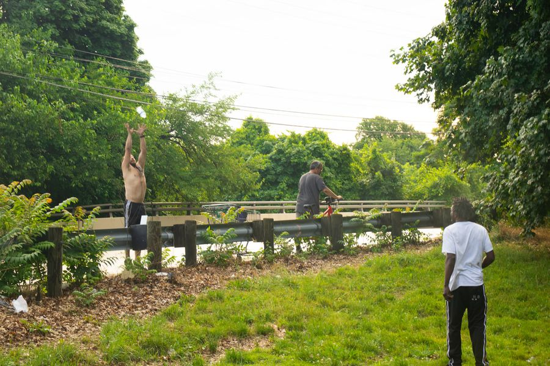

Timeline photos
Ricky told me that after @[103601489691547:274:Community Support Services] gave most people hotel vouchers (except him and 3 other black men) people stopped coming down to bring food.
He said he was thirsty. I happened to have one bottle of water. I apologized that was all I had. He thanked me and immediately took the water and tossed it to this guy on the road. Ricky said they needed it more than him.
I see homeless people doing this kind of thing all the time. But it never ceases to shake me to my core. A thirsty person giving his only bottle of water to a thirstier person. Can you even imagine?